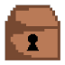

Troll TV is a long game, and you shouldn't expect to beat it on your first run through.
Your goal in the early runs is to build up winnings to pay for the higher level upgrades.
One mistake a lot of newer contestants make is trying to fight every monster they see.
Don't fall for this! Your total winnings are a combination of what room you reached and how many
coins you picked up. Everything else is a distraction.
 Hidden Traps, Doors, and Treasure Chests have a chance to be revealed the first time you get close to them. You have a 50 + A - B percent chance to find each one, where A is your perception score and B is the current room number.
 Potions provide full healing, debuff cleansing, and all of your MP back.
In many situations, having a potion to use is the differnce between sicces and failure.
Before jumping though a portal into who-knows-what it is a very good idea to make sure you have at least one.
Potions provide full healing, debuff cleansing, and all of your MP back.
In many situations, having a potion to use is the differnce between sicces and failure.
Before jumping though a portal into who-knows-what it is a very good idea to make sure you have at least one.
 Equipment items will have higher bonuses the higher the room number you find them in.
This rule applies to the Legend Items as well- so if you're brave enough to face the secret rooms
with late-game monsters you can acquire very strong items.
Equipment items will have higher bonuses the higher the room number you find them in.
This rule applies to the Legend Items as well- so if you're brave enough to face the secret rooms
with late-game monsters you can acquire very strong items.
 Once you've unlocked Guardian Monsters, you will encounter them in exactly 14 places: rooms 10, 20, 40, 80,
and each of the secret rooms. Each Guardian drops a specific item each and will drop it every time they are
beaten- except for Power Orbs which will only be dropped if you don't already have that one.
Once you've unlocked Guardian Monsters, you will encounter them in exactly 14 places: rooms 10, 20, 40, 80,
and each of the secret rooms. Each Guardian drops a specific item each and will drop it every time they are
beaten- except for Power Orbs which will only be dropped if you don't already have that one.
If you learn which Guardian drops what item, you'll be able to make better choices on which dangerous secret
rooms to explore.